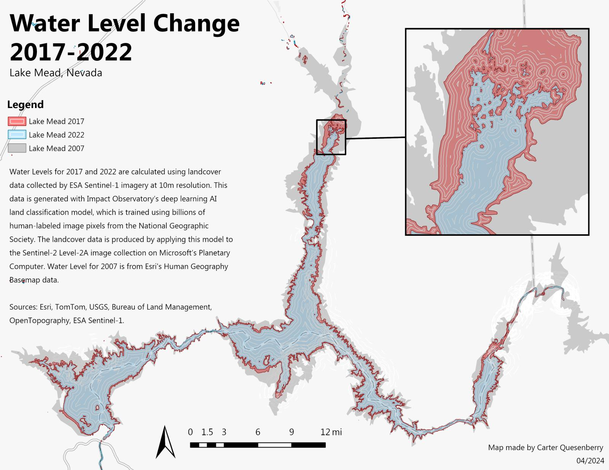
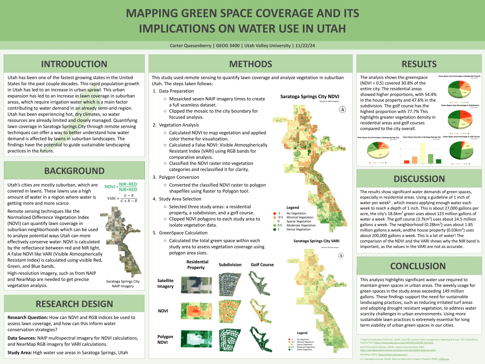
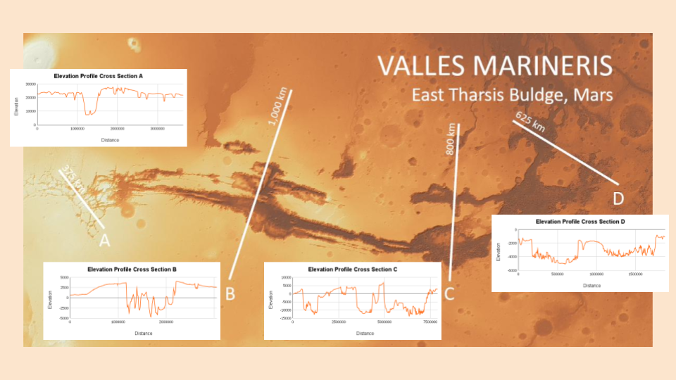
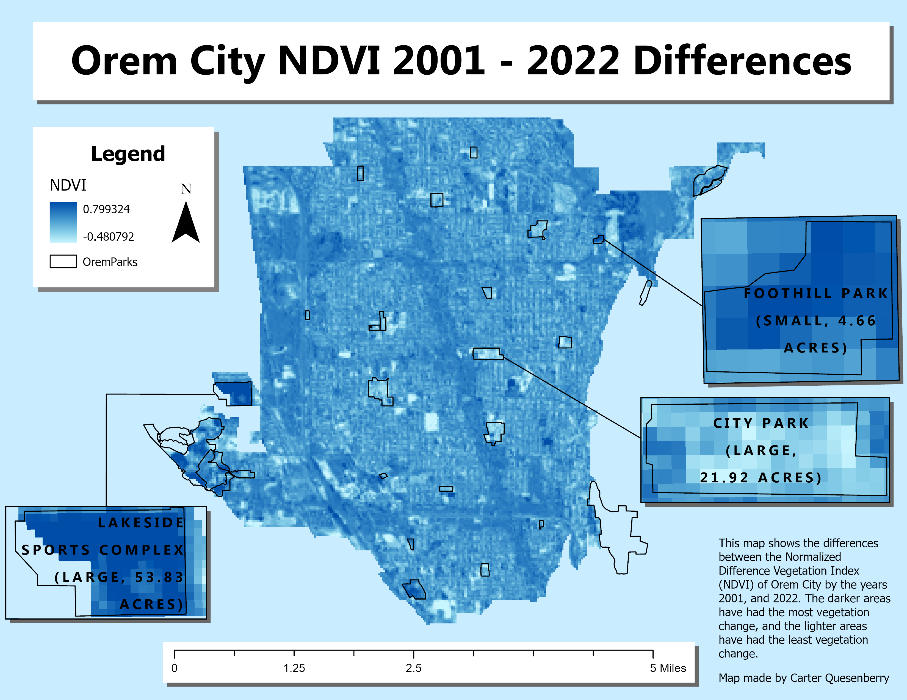
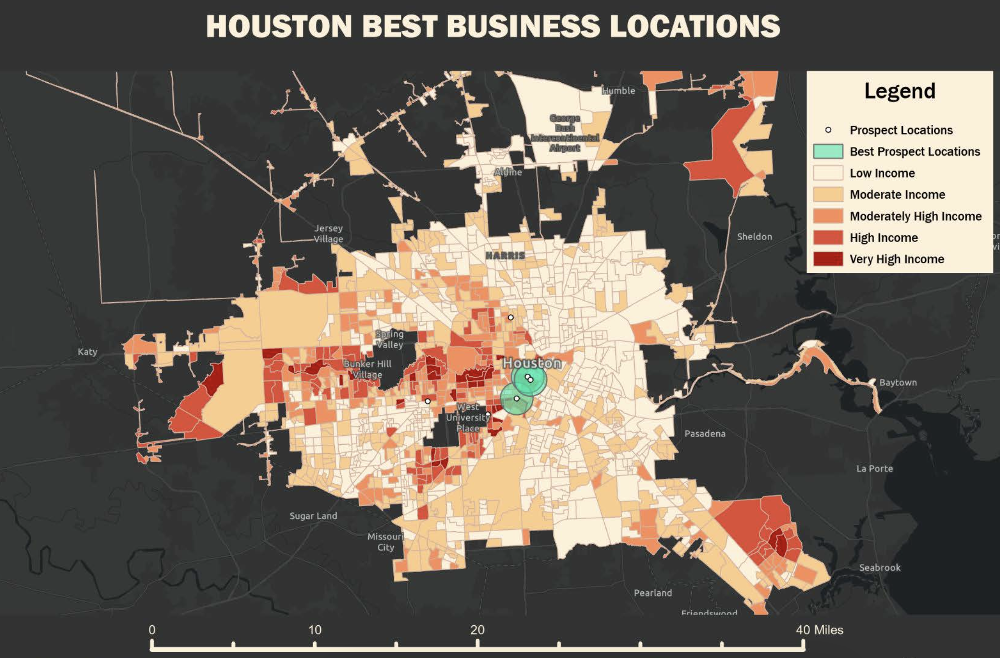
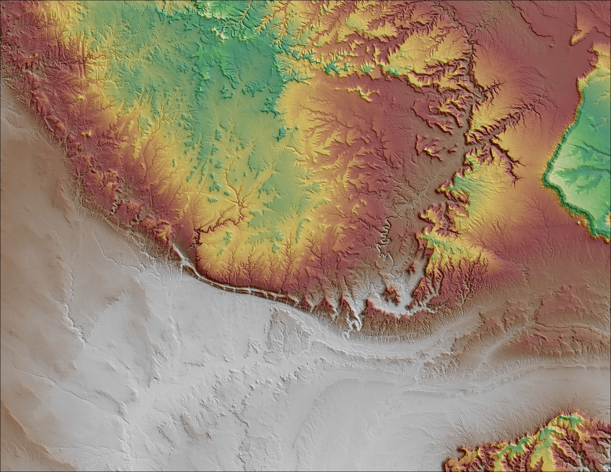
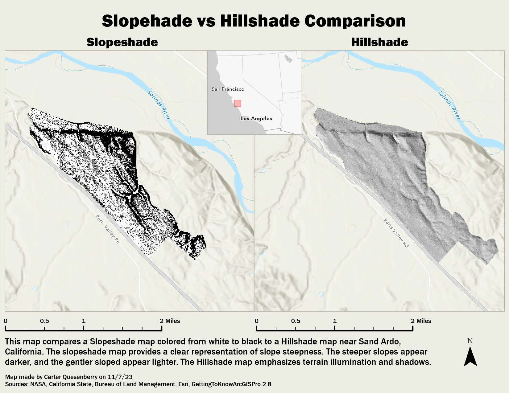
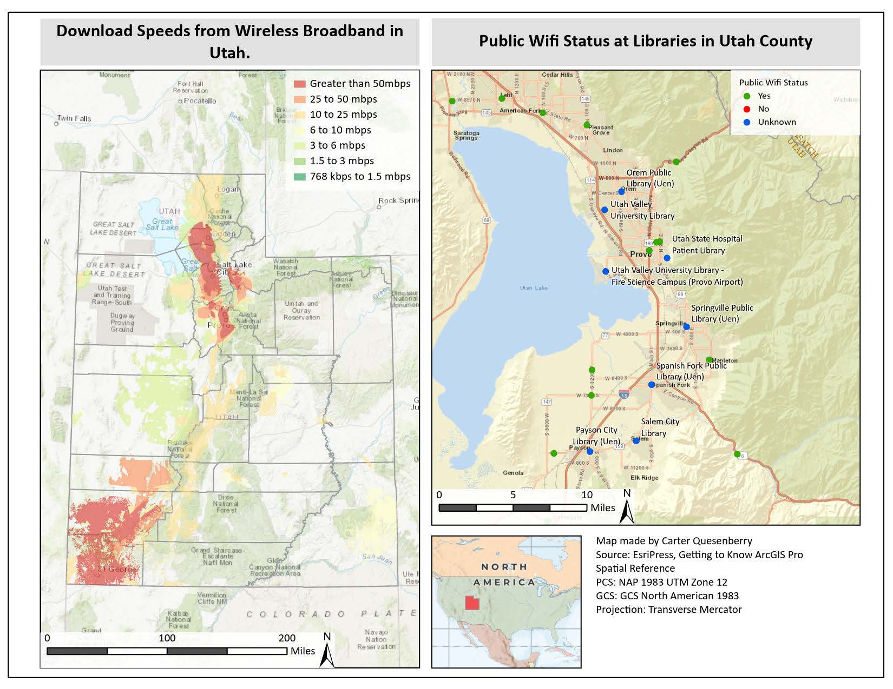
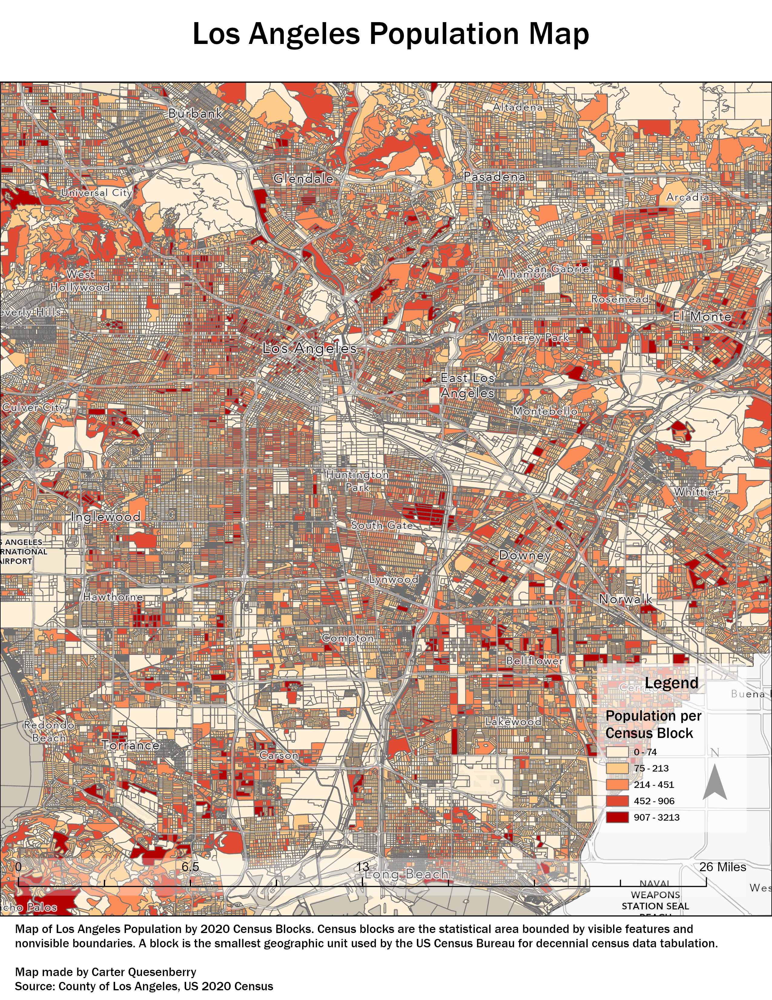
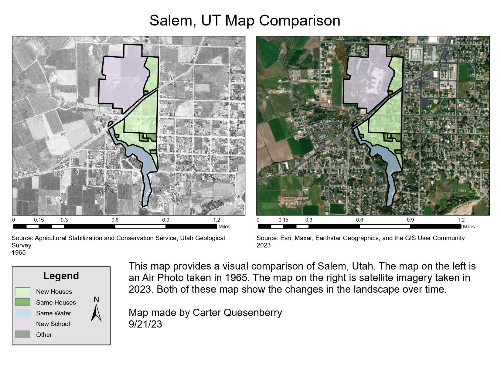

Work
GIS Portfolio

Traffic Signals in Saratoga Springs
January 2026 · Saratoga Springs, UT
Mapping city and UDOT-owned traffic signals throughout the City of Saratoga Springs.

USPS Offices & Population, Congressional District 4
April 2025 · North Utah
Mapping USPS post office locations and service populations within Utah's Congressional District 4.

USPS Post Offices, North Utah County
March 2025 · Utah County
Analyzing Lehi Post Office service area, serving significantly more residents then other locations.

Water Level Change Analysis
2017 – 2022 · Lake Mead, NV
Tracking water level changes in Lake Mead using ESA Sentinel-1 imagery at 10m resolution over a 5-year period.

UVU Campus Orthomosaic
10/26/24 · Orem, UT
High-resolution drone orthomosaic of UVU campus with sub-meter accuracy for campus planning and facility management.

UVU Campus DEM
10/26/24 · Orem, UT
Digital Elevation Model of UVU campus for drainage analysis, site planning, and environmental studies.

Greenspace in Saratoga Springs
Urban Planning Study · Utah
Analyzing green space distribution, park accessibility, and their relationship to community development.

Cloud Mask over Indonesia
Remote Sensing · Java Island
Automated cloud detection algorithms to improve remote sensing analysis in tropical regions.

Cloud Mask NDVI Comparison
Comparative Analysis
Comparing cloud masking techniques on NDVI calculations for vegetation monitoring and environmental assessment.

Orthomosaic Comparison
Photogrammetry Study
Evaluating DSM and orthomosaic processing workflows and their impact on final product quality.

Unsupervised Classifications
Machine Learning Project
Comparing K-means, ISODATA, and clustering techniques for land cover mapping across landscape types.

Unsupervised UVU Classification
Land Cover Analysis · UVU
Identifying buildings, vegetation, pavement, and natural areas on UVU campus via classification.

Valles Marineris Elevation Profiles
Planetary GIS · East Tharsis Bulge, Mars
Cross-sectional elevation analysis of Valles Marineris using Mars terrain data, profiling the canyon system's depth and structure across multiple transects.

Orem City NDVI
2022 · Orem, UT
NDVI analysis of Orem City providing insights into urban vegetation health and distribution patterns.

Orem City NDVI Changes Over Time
Multi-Temporal Study
Time series vegetation analysis identifying areas of gain and loss to support environmental monitoring.

UVU DEM Comparison
Elevation Analysis · UVU
Multi-temporal DEM comparison identifying construction, erosion, and landscape modification.

Best Business Locations, Houston
Business Intelligence · TX
Site suitability integrating demographics, transportation, and economic data for commercial development.

San Rafael Swell Shaded Relief
Cartographic Design · Utah
High-quality shaded relief map showcasing advanced terrain visualization of this dramatic Utah landscape.

Slope and Hillshade Comparison
Terrain Analysis
Comparing slope calculations and hillshade visualizations for terrain and topographic analysis.

Download Speeds & Wifi Status, Utah
Connectivity Analysis · Utah
Mapping broadband coverage to support digital equity initiatives and infrastructure planning statewide.

Los Angeles Population Map
Demographic Mapping · LA County
Population density mapping using US Census data to visualize urban demographics across LA County.

Changes in Salem, Utah
Urban Development · Salem, UT
Multi-temporal analysis documenting land use changes and growth patterns in this growing community.